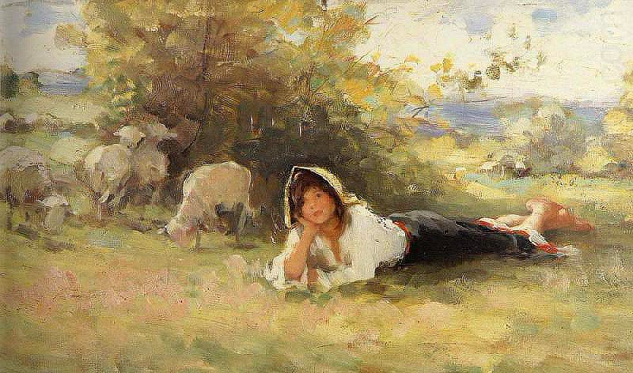

Mioritikon
A sonic meditation on the erasure of Romanian cultural specificity

Recordings
Recording
Summary
Mioritikon reflects on the possible erasure of a distinctly Romanian ethos under the pressure of technological modernity and cultural globalization. Drawing on Marțian Negrea’s Păstorița, the piece sets an archaic pastoral world against industrial sonorities and dodecaphonic tensions, tracing an image of loss, disintegration, and estrangement.
Imprint
| Orchestration | Synthesizers and Musique concrète |
|---|---|
| Lyrics | George Coșbuc, (The Shepherdess) — 1893 |
| Duration | 5:00′ |
| State | Finished |
| Completed | 2018 |
| Premiered | 2018 |
| Performed by | — |
| Honors | Nominated among the finalists of the Electronic Music Composition Contest held by the “InnerSound” New Arts Festival, 5th edition Acquired by UCMR (2019) |
| Copyright | Claudius Iacob |
Program notes
Mioritikon is a sonic meditation on the erasure of Romanian specificity in the contemporary world. It offers an acoustic embodiment of the void, with direct reference to this early twenty-first century, hyper-technologized, consumerist, and globalizing age. In the irresistible rush toward the leveling of cultural particularities, what chance does that eternity — which, in Lucian Blaga’s famous phrase, was born in the village — still have of finding a place?
The music unfolds a contradictory discourse starting from Păstorița by the Romanian composer Marțian Negrea, a masterpiece of Romanian choral music and, at the same time, an apodictic symbol of an archaic time and of the so-called “Mioritic space,” both so strikingly picturesque. The electronic sonorities added to it, distributed across two opposing planes, one of confirmation and one of resistance, jointly sketch an image of disintegration, loss, and wandering. The truncated and reinterpreted lines from Coșbuc’s poem cast a cataclysmic light over the whole process („și murind […] soarele” / “and [...] the sun, dying”) and bitterly ironize the nation’s indifference and inertia in the face of self-loss („obosit și blând popor / noapte bună, noapte bună” / “weary and gentle people / good night, good night”).
The piece was composed in August 2018 in response to the electronic music composition competition organized by the fifth edition of the InnerSound International Festival of contemporary art music, where it was nominated among the ten finalist works.